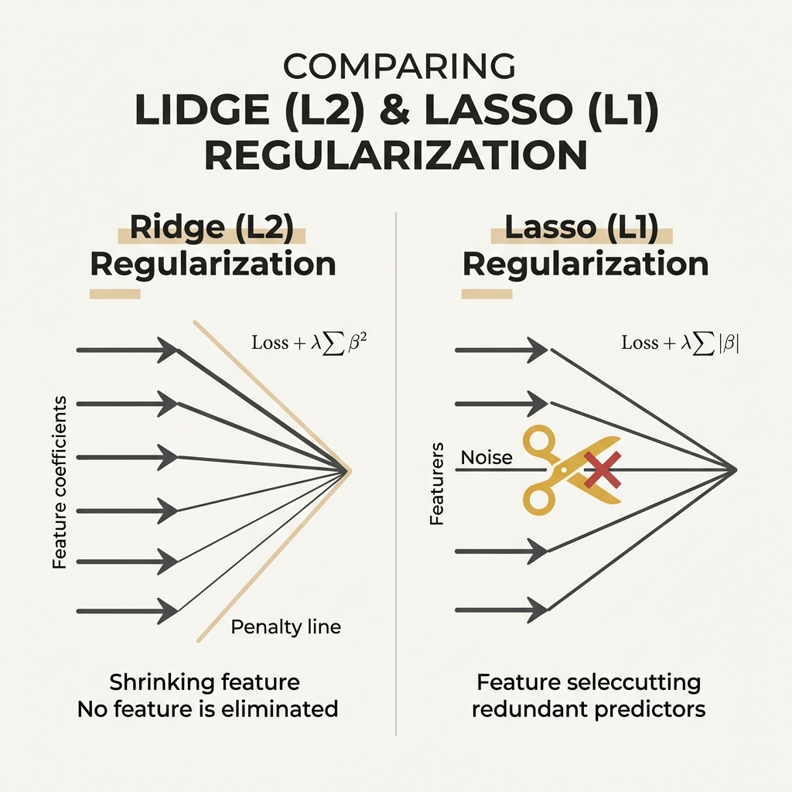
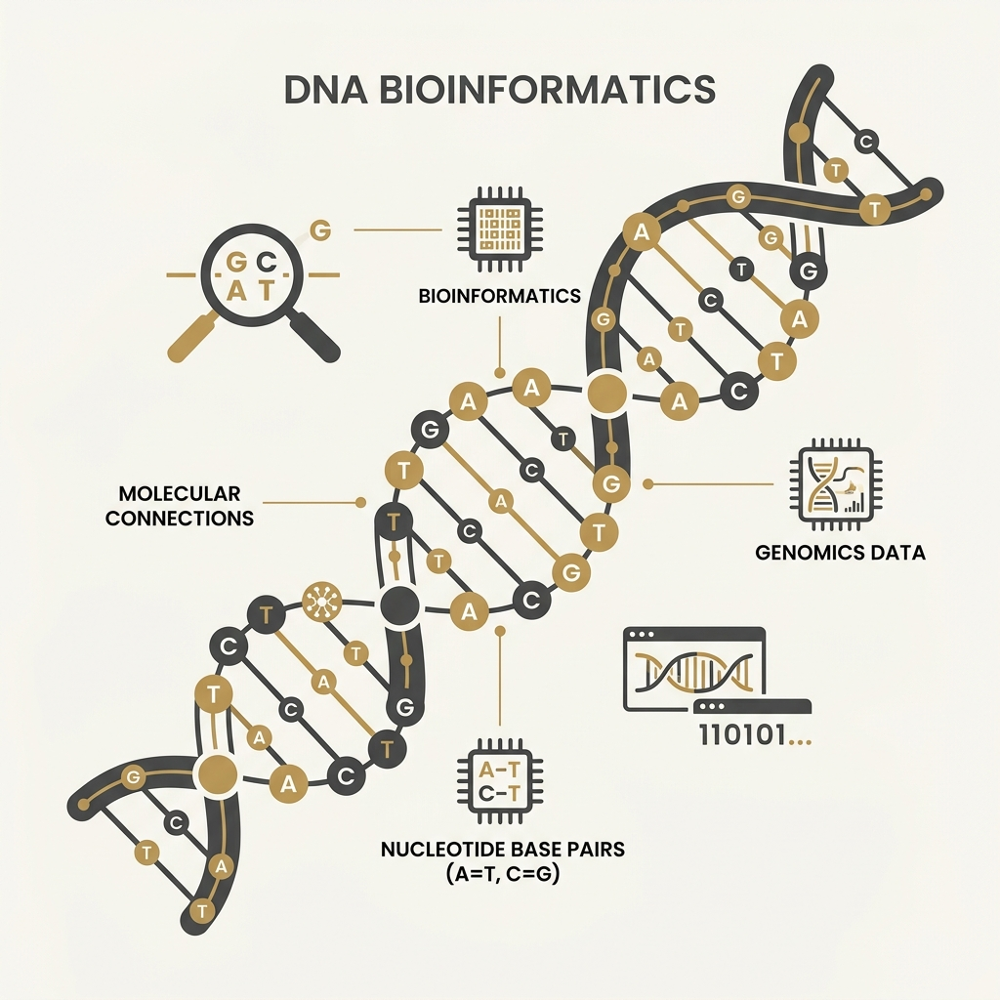
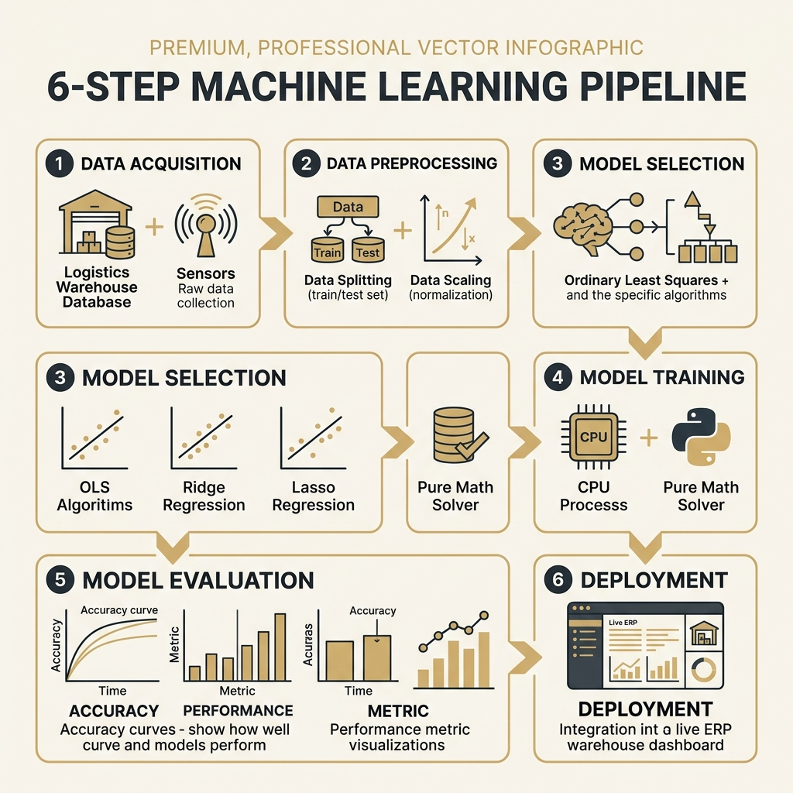
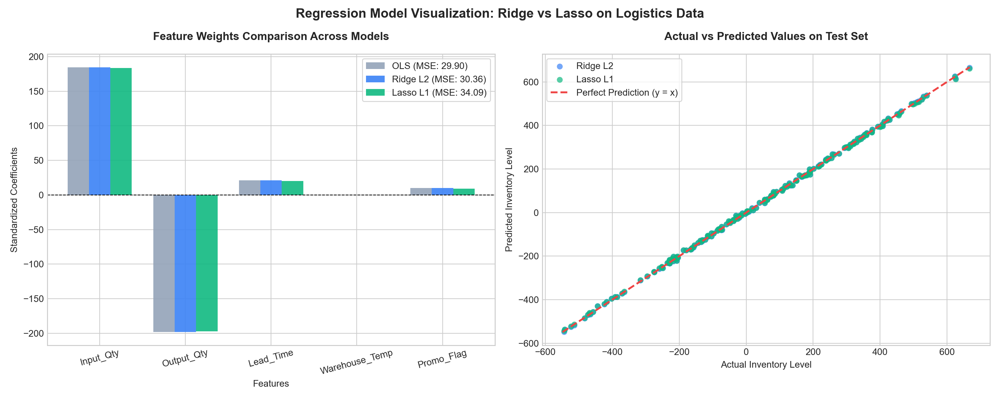

(Accuracy vs Interpretability)
(Dense vs Sparse)
(Ridge keeps all / Lasso drops some)
(Ridge shares / Lasso picks one)
(House prices — all features matter)
(Gene data — few key genes)
(Lasso caps & trims / Ridge shares weights)
(p > n: Lasso caps at n · Standardize)
Dự báo rủi ro tín dụng và biến động cổ phiếu từ các chỉ số kinh tế vĩ mô đa cộng tuyến mạnh. Ridge Regression giúp giữ lại tất cả các biến nhưng chia sẻ trọng số đều để mô hình ổn định.

Cô lập các biến thể gen quy định bệnh lý khi số biến gen (p ≈ 20,000) vượt xa số mẫu bệnh nhân (N ≈ 100). Lasso Regression tự động ép gen nhiễu về 0, cô lập gen đích.
Dự báo giá trị vòng đời khách hàng (CLV) từ hàng trăm chỉ số hành vi. Lasso dọn sạch các biến phụ, tạo mô hình tinh gọn để chạy real-time siêu nhẹ.

| Đặc trưng | Hệ số OLS | Hệ số Ridge | Hệ số Lasso |
|---|---|---|---|
| Input_Qty | 184.73 | 184.50 | 183.73 |
| Output_Qty | -198.10 | -197.85 | -197.16 |
| Lead_Time | 21.18 | 21.15 | 20.13 |
| Promo_Flag | 9.95 | 9.95 | 8.97 |
| Warehouse_Temp (Noise) | 0.0053 | -0.0070 | 0.0000 Bị cắt |
